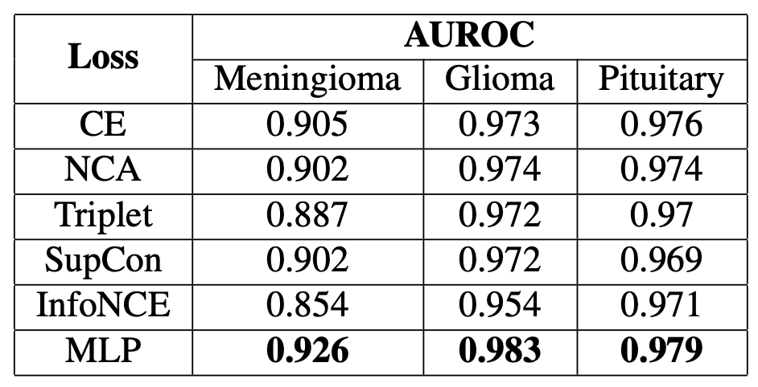
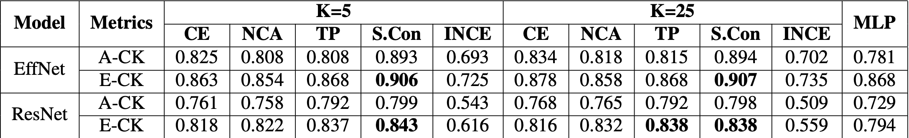

AI - Content Based Image Retrieval (AI-CBIR) to Guide Brain Tumor Diagnosis
Pranav Manjunath1; Brian Lerner2; Timothy Dunn, PhD1,2
1Dept. Of Biomedical Engineering, Duke University; 2Dept. Of Electrical and Computer Engineering, Duke University

AUROCs on EfficientNet when K=25

Classification Performance - Average Cohen Kappa Stat (A-CK) and Ensemble Cohen Kappa Stat (E-CK). CE, NCA, Triplet (TP), SupCon (S.Con), and InfoNCE (INCE) for both EfficientNet (EffNet) and ResNet. MLP represents the traditional EffNet and ResNet based classifier. All values are derived from 5 trials of each model.Table Design 2